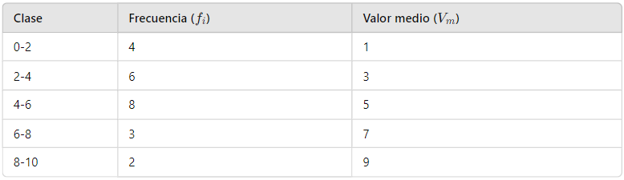
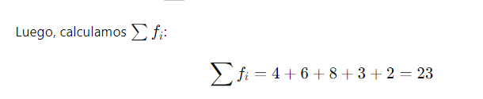
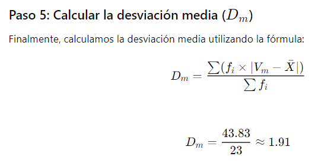
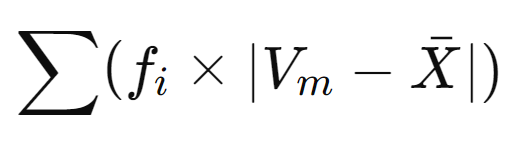

Desviación media
Supongamos que tenemos los siguientes datos agrupados que representan la cantidad de libros leídos por un grupo de estudiantes en un mes.
Calculamos el valor medio (Vm) de cada clase, que es el punto medio del intervalo de clase.

Ejemplo
Paso 2: Calcular la media (X) de los datos agrupados

Primero, calculamos

=4×1+6×3+8×5+3×7+2×9
Lo que nos da como resultado 101


Paso 3: Calcular las desviaciones cuadráticas

Por lo tanto, la desviación media de estos datos agrupados es aproximadamente 1.91 libros.
Paso 4 Sumar:
=4×3.39+6×1.39+8×0.61+3×2.61+2×4.61
=13.56+8.34+4.88+7.83+9.22=43.83